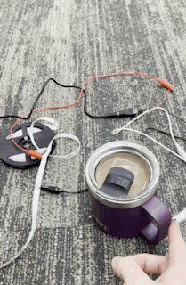
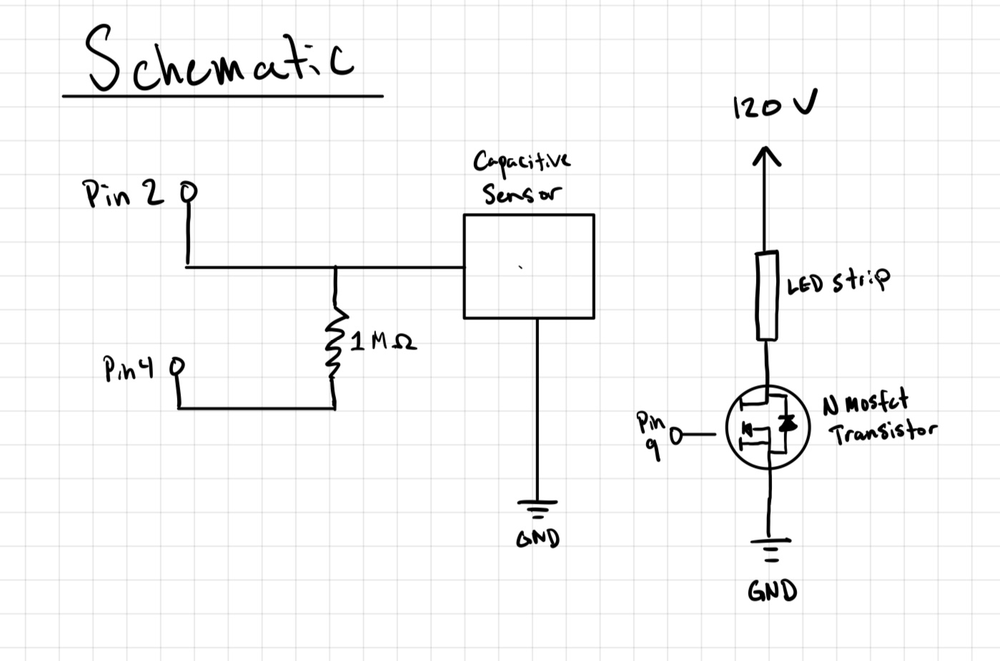

# include // Importing Capacitive Sensor Library
CapacitiveSensor cs_4_2 = CapacitiveSensor(4, 2); // Initializes Capacitive Sensor
int light_pin = 9 ; // Identifies pin 9 as ligh_pin
int threshold = 400; // Initializes threshold for capacitive sensor
void setup() {
Serial.begin(9600); // Initializes serial communication
pinMode(light_pin, OUTPUT); // Sets ligh_pin as an output pin.
}
void loop() {
// Reads in capacitive sensor value
long touch_val = cs_4_2.capacitiveSensor(30);
// If capacitive sensor value is greater than threshold lights turn on
// Otherwise lights turn off.
if (touch_val > threshold) {
analogWrite(light_pin, 255);
} else {
analogWrite(light_pin, 0);
}
}

SETUP:
Use pinMode to set pin 1, 2, 3, 5, 6, and 10 as outputs set to LOW.
Corresponding Schematic: 1:EN, 2:EN, 3:1A , 5:2A , 6:4A, 10:3A
Define the motors.
Use DigitalWrite to set motor1 and motor2 to HIGH (using pin 1 and pin 2 respectively).
LOOP:
Move both motors forward:
Control motor 1 with digitalWrite, and set pin 5 to high and 3 to low.
Control motor 2 with digitalWrite, and set pin 6 to high and pin 10 to low.
Move both motors backwards:
Control motor 1 using digitalWrite, and set pin 5 to low and pin 3 to high.
Control motor 2 using digitalWrite, and set pin 6 to low and pin 10 to high.
Move Motor1 forward and Motor2 backward:
Control motor 1 using digitalWrite, and set pin 5 to high and 3 to low.
Control motor 2 using digitalWrite, and set pin 6 to low and 10 to high.
Move Motor 1 backward and Motor2 forward:
Control motor 1 using digitalWrite, and set pin 5 to low and 3 to high.
Control motor 2 using digitalWrite, and set pin 6 to high and 10 to low.
Stop motors before the loop restarts:
Set motors 1 and 2 to LOW.